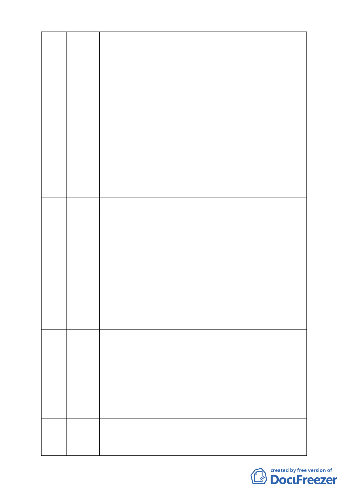

區就應回歸保護區的功能，否則當初又何必要畫為保護區呢？這一
（洪美惠代） 定有其道理，難道之前的人都錯了嗎？為了要行善就要開發保護
區，這代表在錯的地方做了錯事。如果沒有程序正義又哪來的實質
正義，整個審議過程就是錯的、沒有意義。謂何這樣的一塊地會成
為私人所有？或許不是都發局的錯，可是用調和經濟來談這個問
題，那全台灣不就都可以開發了嗎，是不是也把大湖公園填起來一
起開發。
我反對此案的開發，但我還是支持慈濟的志業，但我還是要說這是
76 游藝 ㄧ個道德的問題，今天面對的是保護區開發政策的問題，也是很重
要的道德問題去面對我們的下ㄧ代，這塊地就好比一個貞潔的少女
被玷污後要做處女膜重建一般，當初被填平現在要進行開發並做滯
洪沉砂池，這實在是很荒謬的ㄧ件事。保護區不容許有任何原因理
由去玷污這塊地，去玷污山坡地保護區政策，這一個重要觀念應透
過在場都委會委員及老師堅持之，以避免此政策開了一個口讓建商
可以透過此案例任意買地進行變更，否則我們如何面對下ㄧ代。另
有關主席所說程序問題僅委員可以提這一點，經我們洽詢律師表示
程序問題是所有經邀請列席的人都可以提的，故請主席明確告知其
法令依據為何。
（不在現場）
77 戴李蘭
我覺得慈濟最委屈的是為了反對蘇花高，因為蘇花高的議題最近變
78 潘翰聲 成蘇花改而沒有任何慈濟人出來講話，又為何慈濟在此議題從反對
變為沉默，慈濟本身做為一個開發單位時其所行所言真的跟ㄧ個開
發商沒有兩樣。很多人都說慈濟是ㄧ個好人，我只是很疑惑好人就
可以做壞事嗎？好人就可以說謊嗎？好人就可以規避法律嗎？好
人就可以不做環評嗎？慈濟的動員跟傅縣長率人去環保署包圍要
求通過蘇花改環評是ㄧ樣的。又為何別人變更我們沒有出來，慈濟
變更我們就出來，請問我們是政府嗎？我們只是一個環保團體阿。
說我們出來講話是在要選票，就根遠雄在大巨蛋講的話是ㄧ模ㄧ
樣。本案程序部分真的有問題，與其事後在告來告去，不如今天就
停止審查。
（不在現場）
79 溫炳原
我是家庭主婦，我不知要如何教育小孩，沒有正義沒有是非，我要
80 李宜潔 如何跟孩子說保護區居然能夠變更，內湖的好山好水希望慈濟和內
（陳小姐代） 湖人都有好心腸來保護它。所有的慈善團體都在買濕地作保護，為
何本案要破壞此慣例，將來小孩做錯事也可以藉由任何理由而原諒
他嗎？我們從來沒否定慈濟所做的貢獻，但是更希望慈濟發揮其做
善事的精神將這塊地變成永遠的保護區，這將是ㄧ項最大的功德，
所有內湖居民也都會感謝他。更希望今天透過這個會議讓所有人有
知的權利，有免於恐懼的權利。
（不在現場）
81 又魯彬
謹代表荒野保護協會反對本案反對慈濟變更保護區從事開發利
82 宋佳倫 用，因荒野保護協會的宗旨就是將荒野地保護下來，成為自然的偃
（黃詩涵代） 體。此案讓我們知道我們的教育是不夠的，之後也會跟慈濟合作將
尊重自然的觀念深植於每個人心中。也請慈濟聽取衷心建議將本案
- 11 -